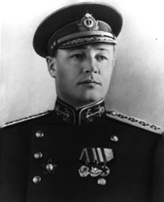

Кузнецов Н.Г.
Николай Герасимович Кузнецов
Советский военно-морской деятель, Адмирал Флота Советского Союза, депутат Верховного Совета СССР 2 и 4-го созывов.
11(24).07.1904—6.12.1974
Сын казённого крестьянина Герасима Фёдоровича Кузнецова. С 1917 г. — рассыльный Архангельского порта. В 1919 г. 15-летний Кузнецов вступил в Северодвинскую флотилию, приписав себе два года, чтобы быть принятым. В 1921—1922 гг. — строевой Архангельского флотского экипажа. C 1922 г. служил в Петрограде, в 1923—1926 гг. учился в Военно-морском училище им. Фрунзе, которое окончил с отличием 5 октября 1926 г.. В 1929—1932 гг. — слушатель Военно-морской академии, которую также окончил с отличием. В 1932—1933 гг. — старший помощник командира крейсера «Красный Кавказ». С ноября 1933 г. по август 1936 г. командовал крейсером «Червона Украина», где довёл до совершенства систему боевой готовности одиночного корабля. В августе 1936 г. отправлен на гражданскую войну в Испанию, где был главным военно-морским советником республиканского правительства.
С августа 1937 г. — заместитель командующего, с января 1938 по март 1939 г. — командующий Тихоокеанским флотом.
29 апреля 1939 г. 34-летний Кузнецов назначен Народным комиссаром ВМФ СССР: он был самым молодым наркомом в Союзе и первым моряком на этой должности.
Накануне внезапного нападения Германии на СССР принял действенные меры по повышению боеготовности флотов, а в ночь на 22 июня отдал приказ о приведении их в полную боевую готовность, что позволило избежать потерь кораблей и морской авиации.
Во время войны Кузнецов оперативно и энергично руководил флотом, координируя его действия с операциями прочих Вооружённых Сил. Был членом Ставки Верховного Главнокомандования, постоянно выезжал на корабли и фронты. Флот предотвратил вторжение на Кавказ с моря. Большую роль в противодействии противнику сыграли морская авиация и подводный флот. ВМФ сопровождал конвои с ленд-лизом и оказывал помощь союзникам. Значительная роль уделялась морскому образованию и учёту опыта войны.
В 1945 г. участвовал в составе советской делегации в работе Крымской и Потсдамской конференций руководителей трёх союзных держав.
25 февраля 1946 г. самостоятельный Наркомат ВМФ СССР был упразднён и Военно-морской флот был включён в состав объединенного Наркомата Вооружённых Сил СССР. Кузнецов был назначен главнокомандующим ВМС — заместителем Наркома (затем Министра) Вооружённых Сил СССР. В январе 1947 г. в результате разногласий со Сталиным по поводу программы дальнейшего развития ВМФ был снят с поста Главкома и в феврале 1947 г. назначен начальником Управления военно-морских учебных заведений.
12 января 1948 г. Кузнецов вместе с группой адмиралов (Л. М. Галлером, В. А. Алафузовым и Г. А. Степановым) был предан Суду чести Министерства Вооружённых Сил СССР под председательством Маршала Советского Союза Говорова. Обвинение состояло в том, что в 1942—1944 гг. они без разрешения Правительства СССР передали Великобритании и США секретные чертежи и описания высотной парашютной торпеды, дистанционной гранаты, нескольких корабельных артиллерийских систем, схемы управления стрельбой, а также большое количество секретных морских карт. Суд чести признал их виновными и постановил ходатайствовать перед Советом Министров СССР о предании виновных суду Военной коллегии Верховного суда СССР.
2 — 3 февраля 1948 г. Военная коллегия Верховного суда СССР признала Кузнецова виновным в предъявленных ему обвинениях, но, учитывая его большие заслуги в прошлом, постановила не применять к нему уголовного наказания. Одновременно Военная коллегия постановила ходатайствовать перед Советом Министров о снижении Кузнецова в воинском звании до контр-адмирала.
С июня 1948 г. Кузнецов — заместитель Главнокомандующего войсками Дальнего Востока по военно-морским силам.
С февраля 1950 г. — командующий 5-м военно-морским флотом на Тихом океане.
В декабре 1955 г. Кузнецова под предлогом виновности во взрыве на линкоре «Новороссийск» сняли с должности, а 17 февраля 1956 г. он понижен до вице-адмирала и уволен в отставку с унизительной формулировкой «без права работать во флоте».
Писал и публиковал воспоминания. Автор «официальной» книги «Курсом к победе» и мемуаров о войне, о репрессиях, о Сталине, которые были изданы лишь посмертно; в них он резко критикует партийное вмешательство в дела армии и утверждает, что «государством должен править закон». В отличие от многих других «маршальских» воспоминаний, записки написаны Кузнецовым лично и отличаются хорошим стилем. В официальной истории войны его роль из-за опалы часто затушёвывалась. Даже посмертно Кузнецова не удавалось восстановить в звании, пока Горшков был жив. Лишь 26 июля 1988 г. Кузнецов был посмертно восстановлен в звании Адмирала Флота Советского Союза.
| Крупская Н.К.< Предыдущая | Следующая >Куйбышев В.В. |
|---|